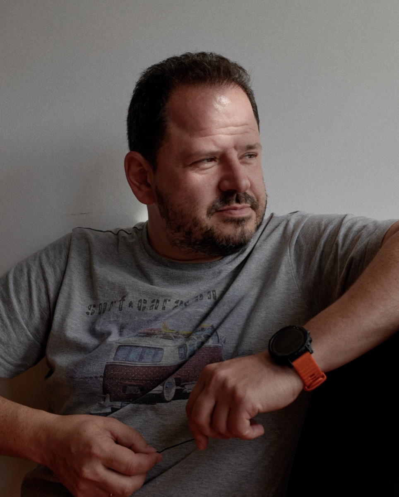

Александр Лысковский

48 лет, Москва. 25+ лет в технологических компаниях: Alawar (игры, экзит), Welltory (HealthTech, экзит), iFarm (AgriTech, вертикальные фермы в 9 странах), ДАО Тех (нейронки в промышленной роботизации) — исполнительный директор с января 2026.
Со времён Welltory держу в голове идею: каждый человек должен иметь персонального AI-помощника по здоровью, который видит его анализы, питание, сон, тренировки — и помогает думать на собственных данных, а не на общих рекомендациях.
Десять лет назад это было фантастикой. Сегодня — благодаря зрелым LLM, MCP и инструментам вайб-кодинга — это реальный проект.
Botkin сделан для себя и семьи. У каждого пользователя свой ассистент, свой набор анализов, своя приватность.
Открытый исходный код — намеренно. Забирай, форкай, делай свою копию для своей семьи или клиентов. Хочешь обсудить применение в клинике, в корпоративной программе wellness, в исследовании? — напиши мне.